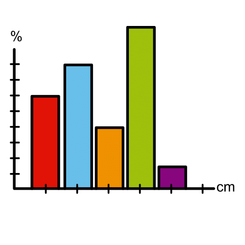
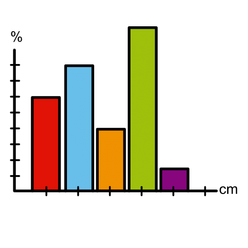

Diccionario
Gráfica

- Definición
-
Representación de datos numéricos a través de recursos visuales.
- Ejemplo
-
El profesor nos mandó hacer una gráfica con los datos las precipitaciones de los meses de otoño.


Ya estás preparado.
Has recordado todo lo que sabías sobre números decimales y cómo operarlos.
Además has aprendido a realizar aproximaciones y analizar la importancia del error cometido.
Ha llegado la hora de realizar el estudio de nuestros gastos y obtener las conclusiones
sobre la importancia que tienen las monedas de céntimo en nuestra economía personal, familiar y local.
¡Manos a la obra!
Vas a realizar un estudio de cómo afectaría dejar de usar monedas de céntimo, y que la moneda de menor valor que se pudiera usar fuese la de 10 céntimos, un décimo de euro.
Forma tu grupo de trabajo, que puede ser el mismo con el que has trabajado hasta ahora.
Vuestra tarea es:
Para realizar el estudio tienes que completar los siguientes pasos:
Para realizar las listas puedes usar una hoja de cálculo, en este enlace puedes obtener ayuda.
En el informe escrito deben de aparecer cómo mínimo los cuatro apartados del estudio, es decir, debe aparecer:
Puedes añadir cualquier elemento más que creas conveniente, como puede ser alguna gráfica.
Si encuentras alguna dificultad para redactar el informe en este enlace puedes obtener ayuda.
Debes grabar un vídeo corto, en el que des razonadamente la respuesta a la pregunta de si te conviene que desaparezcan las monedas de céntimo.
También debe aparecer sobre qué datos has realizado el estudio.
Si tienes alguna dificultad para expresarte en el vídeo, en este enlace puedes obtener ayuda.
Vas a realizar un estudio de cómo afectaría dejar de usar monedas de céntimo
y que la moneda de menor valor que se pueda usar sea de 10 céntimos,
1 décimo de euro.
Haz un grupo de trabajo.
Puede ser el mismo grupo con el que has trabajado.
Vuestra tarea es:
Hacer un estudio
Completa los siguientes pasos:
1.- Decide sobre qué vas a realizar el estudio.
Pueden ser tus gastos, los gastos de tus compañeros de grupo
o los gastos de la familia de un miembro del grupo.
Decide también si el estudio será sobre los gastos
de una semana o sobre los gastos de un mes.
2.- Haz una lista con todos los productos que compras
durante el tiempo que dura el estudio.
En la lista incluye el precio por unidad de cada producto,
la cantidad que consumes y el coste total que suponen.
Súmalo todo para conocer el gasto total.
3.- Haz otra lista redondeando los precios unitarios a los décimos de euro.
Así serían los precios que tendrían si desapareciesen las monedas de céntimo.
Completa la tabla calculando el coste total de cada producto
y el gasto total.
4.- Compara las 2 listas responde razonadamente a la pregunta.
¿Conviene que desaparezcan las monedas de céntimo?
Para realizar las listas puedes utilizar una hoja de cálculo.
En este enlace puedes obtener ayuda.
Para llegar a una meta, es conveniente que seas un buen o buena estratega. Es decir, tener métodos, técnicas, “trucos” para llegar antes o de forma más fácil donde tú quieres.
Ahora te voy a enseñar una estrategia, vamos a aprender a construir la información.
¿Cómo? Sintetizándola, elaborándola y extrayendo conclusiones de ella.
¡Muy útil para cualquier tipo de información!
¡Ánimo, que lo harás genial!
En este último paso te voy a proponer que pienses en qué ha sido lo más importante de todo lo que has aprendido para conseguir el reto que te proponíamos.
Lo que descubras pensando en ello te servirá para cuando tengas que alcanzar retos parecidos en un futuro.
¡Para un momento y completa el PASO 4 de tu Diario de aprendizaje (¿Qué he aprendido?)!
¡Ánimo, que lo harás genial!
Obra publicada con Licencia Creative Commons Reconocimiento Compartir igual 4.0